How to make a Catalog Search?
Launch the application: the main home page is displayed. 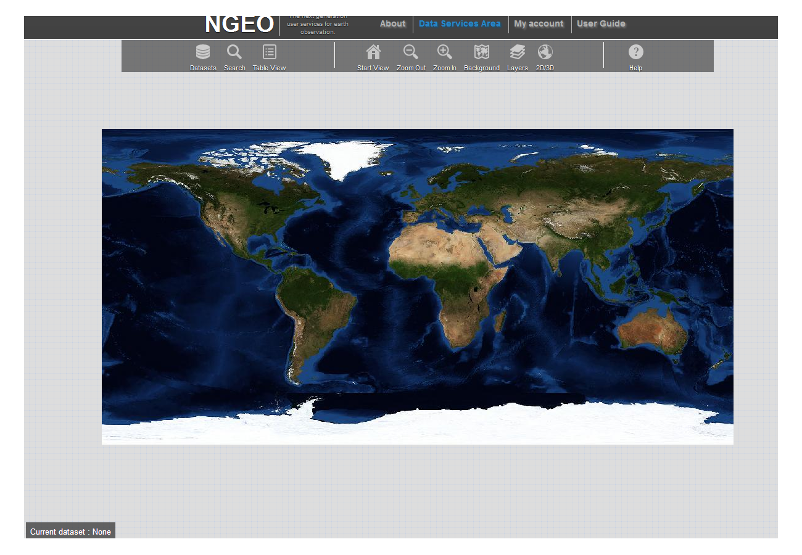
Click on the Datasets icon on the tool bar 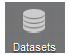, the Dataset Selection widget is opened. 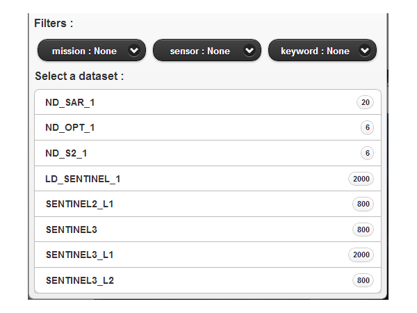
Click on one of the datasets.
Click on the search icon on the tool bar 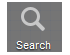, the search widget is opened. 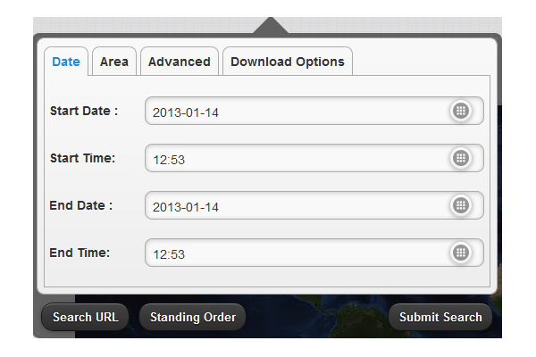
Fill in the search criteria and then click on the Submit Search button
 , the search results table is displayed with the results.
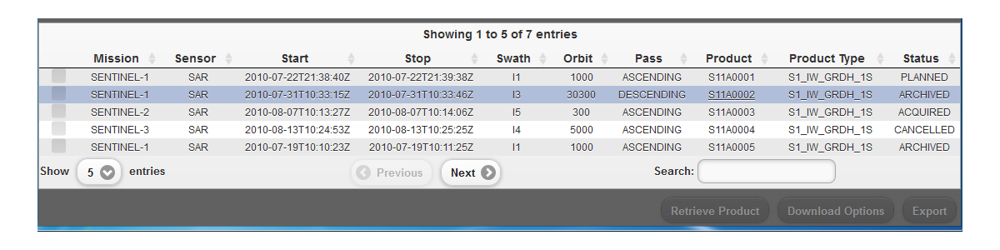
, the search results table is displayed with the results.
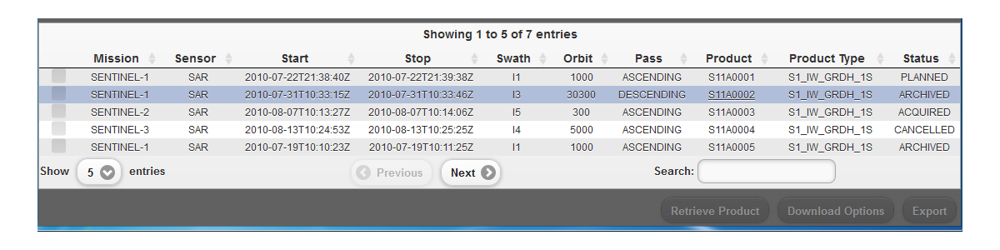
How to Download Products
Make a catalog search See How to make a catalog search.
Once the products are retrieved, check the product id column in the results table: if the product is underlined, this means that the product can be downloaded unless it not downloadable. 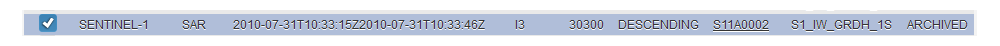
For a downloadable product, click on the product id, the direct download widget is opened. 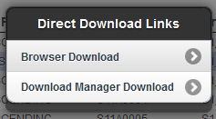.
According to the product url and to the download managers registered, the user can have the choice to either choose a download via:
- the browser
- or the local download manager.
If the Browser Download menu is selected, the browser starts the product download.
If the Download manager Download menu is selected and the download url is validated, a button Download appears. 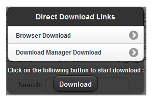
Click on the Download button to start the download.
How to submit a Standing Order?
Launch the application: the main home page is displayed.
Click on the Datasets icon on the tool bar. , the Dataset Selection widget is opened.
Click on one of the datasets in the dataset selection widget: The dataset is selected.
Click on the search icon on the tool bar. , the search widget is opened.
Fill in the search criteria and then click on the Standing Order button 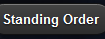, the standing order widget is spawned-up. 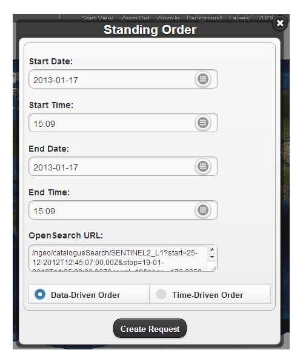
How to submit a Simple Data Access request?
Make a catalogue search See How to make a catalog search.
Once the products are retrieved, check the products to include in a Simple Data Access Request. If the Retrieve Product button 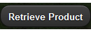 is still disabled this means that the products selected does not have a url.
Click on Retrieve Product button, the data access widget is opened displaying the list of available download managers. 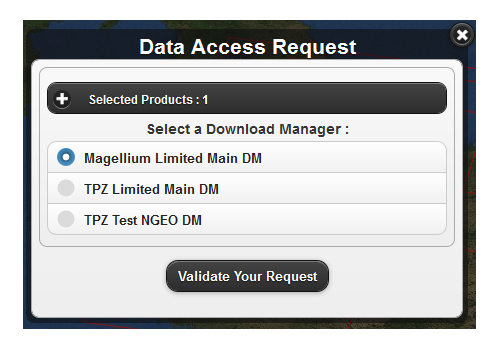
Click on Validate Your Request button. The request is validated and the server response is displayed underneath the button. If the request is successfully validated, the estimated size of the products are displayed and a notification message confirms that the request has been acknowledged. The Validation button is renamed into 'Confirm Your Request' If the validation has failed an error message is displayed with the list of available download managers. 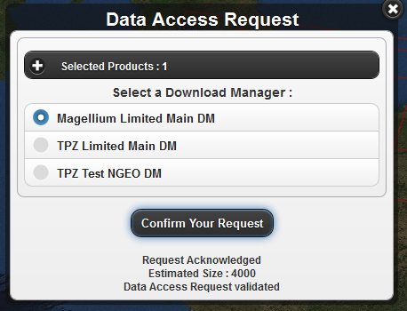
Click on Confirm Your Request button. The request is confirmed and the server response is displayed underneath the button. If the request has been successfully confirmed, the request is being processed, unless an error message is displayed. 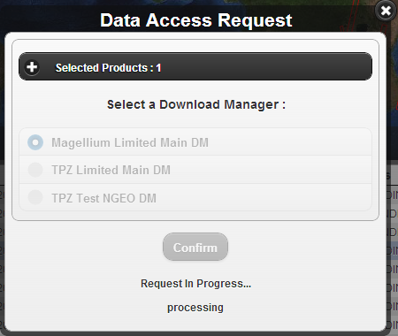
Click on the close icon 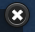to close the widget.
How to change Map Mode?
Click on the 2D/3D button on the toolbar to change the map mode from 2D to 3D and inversely.
In order to zoom out either:
- Click on the Zooum Out 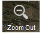button on the toolbar to zoom out.
- or move the mouse wheel out.
Click on the Start View 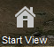button on the toolbar to return back to the initial view.
How to use products on the Map?
Make a catalogue search See How to make a catalogue search.
Once the products are retrieved, the related footprints are drawn on the map.
Click inside a footprint:
- the browse image is projected on the footprint,
- the product row is checked on the results table
- a popup widget is displayed with information on the selected product
- the icon 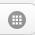 allows submitting a Simple Data access Request. Follow the same steps as in section How to submit a Simple Data Access request?. 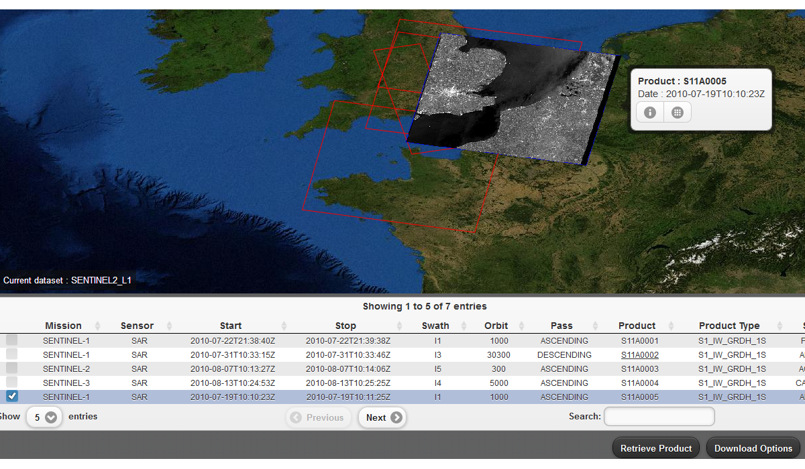
How to select Layers?
Click on the layers icon on the toolbar 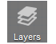.
The layers widget is displayed 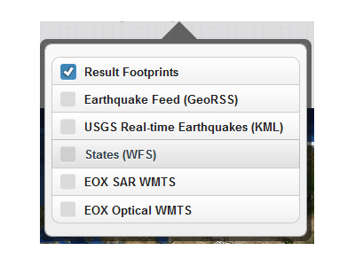. The Results Footprints layers is checked by default. It is the layer which displayed the result items footprints on the map.
Check the checkbox in front of the layer name, the layer is mapped on the map. 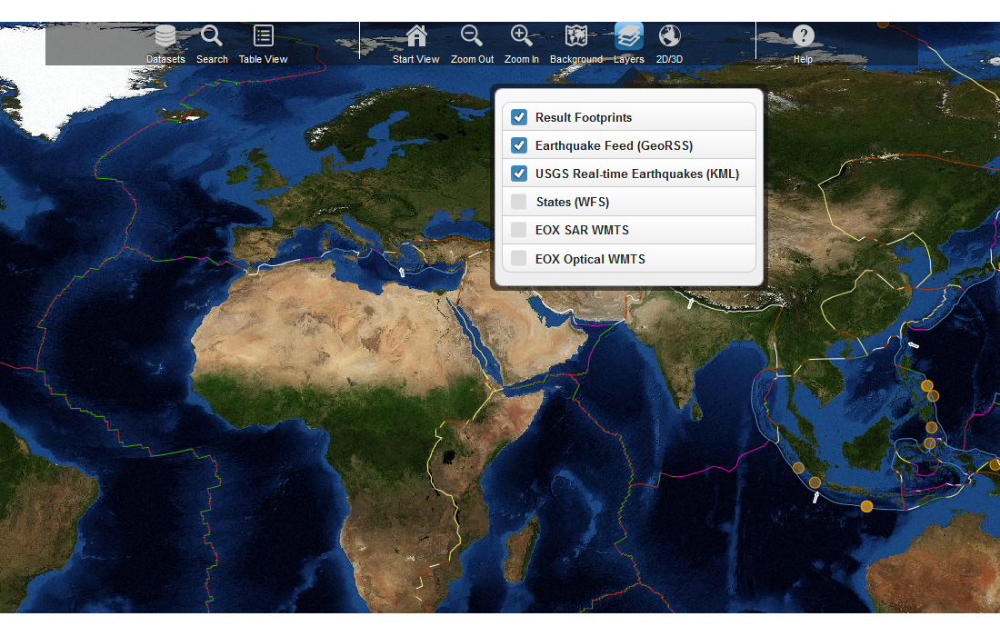
In order to remove a layer from the map, uncheck the checkbox in front of the layer name.
How to change Map Background?
Click on the background icon on the toolbar
 .
.The backgrounds' widget is displayed 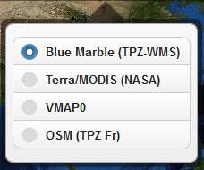.
Click on the radio button in front of the background name to change the map background.
How to manage Download Managers?
Click on My account on the menu bar .
The download managers already registered are displayed with the information details on each one of them.

If there is no download manager, click on Install Download Manager to install a new one.
Select the row of the download manager to monitor, then, the command buttons statuses are updated according to the download manager status.

A STOPPED download manager cannot no more be monitored, so the command buttons are disabled. 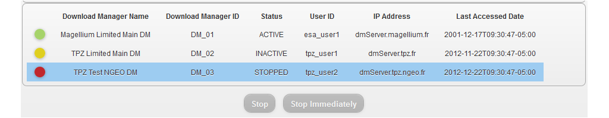
Click on the Stop button
 The Stop an ACTIVE or an INACTIVE download manager.
The Stop an ACTIVE or an INACTIVE download manager.
Click on the Stop Immediately button
 to stop definitively an ACTIVE or an INACTIVE download manager.
to stop definitively an ACTIVE or an INACTIVE download manager.
Please note that once the Stop or the Stop Immediately buttons are clicked, a new command cannot be issued from the user interface. A notification message is displayed to notify the user.

How to manage Data Access Requests?
Click on My account on the menu bar
Click Data Access Requests tab. On the left side, the download managers already assigned to data access requests are displayed. On the right side is displayed the list of the users' data access requests.

Click on the first download manager name: only the data access requests assigned to the clicked download manager are displayed .

Click on the second download manager name: only the data access requests assigned to the clicked download manager are displayed . 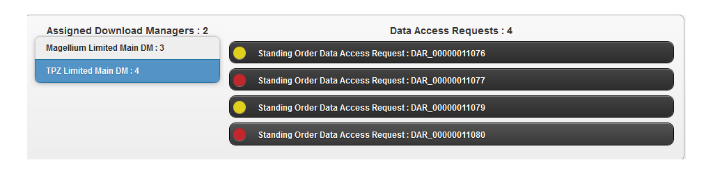
Click on the highlighted download manager name to disable the filtering.
Click on the a data access request to expand it.
 .
.
The data access request id, status, completion percentage and the number of products are displayed.
Buttons Pause, Resume and Stop Immediately buttons are displayed according to the request status.
Click on the Products button to visualize the products details.

Click on the Stop definitively button
 to cancel a processing or a paused data access request.
to cancel a processing or a paused data access request.
Click on the Pause button
 to pause a processing data access request.
to pause a processing data access request.
Click on the Resume button
 to change the status of a paused data access request to processing.
to change the status of a paused data access request to processing.